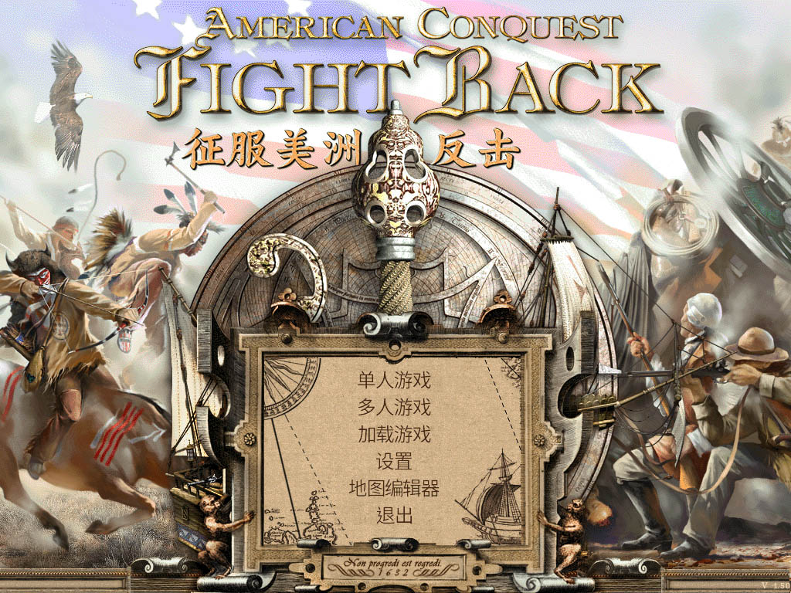

征服美洲-反击 v1.50
American Conquest: Fight Back

『征服美洲-反击』（American Conquest: Fight Back）v1.50版是『征服美洲』系列游戏的第一个独立扩展。游戏增加了5个新国家（德国，俄罗斯，海达，葡萄牙和荷兰）和50个新的单位。除了新增了阿兹特克、德国、海达、俄罗斯等国家的新战役，游戏还增加了"战场战役"模式。新的版本也优化了游戏效果以及AI等。

主要特征：
◇史诗般的即时战略，涵盖1517年至1804年三百年历史；
◇新模式的游戏：单人和多人模式下增加10个竞技战役，可以与电脑或玩家对战；
◇5个新国家和文明：德国，俄罗斯，海达，荷兰，葡萄牙（原有西班牙，英国，法国，阿兹特克，印加，玛雅，苏族，特拉华，休伦，易洛魁，美国和普韦布洛12个国家和文明）；
◇8个令人兴奋的战役，包含26个新的任务，包括搜索黄金国，政府阿兹特克和征服阿拉斯加；
◇新的单人任务；
◇地图上最多可16,000个单位同时战斗；
◇使用军官，鼓手和旗手的步兵，骑兵战术编队和加农炮配合作战；
◇超过50个新的单位；
征服美洲-反击 v1.50 官方正版 (英文) |
||
|
请到本站 中文补丁板块 下载相应版本的中文补丁
支持操作系统：Windows XP / Windows 7 / Windows 8 / Windows 10
|
||
征服美洲-反击 v1.50 免安装 中文版 |
||
|
请使用浏览器直接下载
支持操作系统：Windows XP / Windows 7 / Windows 8 / Windows 10
|
||
征服美洲-黄金版 不仅包含了 征服美洲-反击v1.50 的17个国家民族，还多了大明、朝鲜、日本、纳齐兹 4个国家，并且包含 征服美洲 v1.46 和 征服美洲-反击v1.50 的所有战役，推荐下载 征服美洲-黄金版 以获得更好的游戏体验！